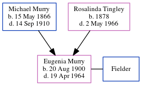

Eugenia A Fielder (née Murry) 1900 - 1964
[ Home ] | [ Calendar ] | [ Surnames Index ] | [ Census Index ] | [ Family History ]The 2nd of 3 children of Michael Murry and Rosalinda Tingley, Eugenia Murry, the second cousin twice-removed on the father's side of Michele Copp (née Phillips), was born in Littleton, Aroostook, Maine, USA on Aug 20, 19001,2. She and was married to Fielder.
During her life, she was living in Littleton, Aroostook, Maine in 19001; and in Houlton, Aroostook, Maine in 19202.
She died on Apr 19, 1964.
Parents
- Michael was born on May 15, 1866
- Rosalinda was born in 1878
Citations
- 1900 United States Federal Census Online publication - Provo, UT, USA: MyFamily.com, Inc., 2004.Original data - United States of America, Bureau of the Census. Twelfth Census of the United States, 1900. Washington, D.C.: National Archives and Records Administration, 1900. T623, 1854 rolls.
- 1920 United States Federal Census Online publication - Provo, UT, USA: MyFamily.com, Inc., 2005. For details on the contents of the film numbers, visit the following NARA web page: NARA. Note: Enumeration Districts 819-839 on roll 323 (Chicago City.Original data - United States of America
Family Tree
Generated by ged2site. Last updated on Jun 6, 2024